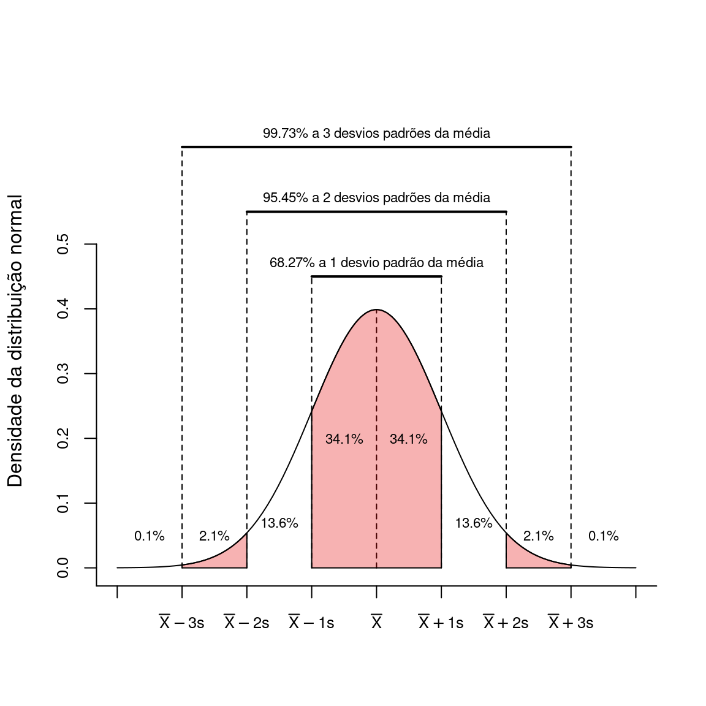
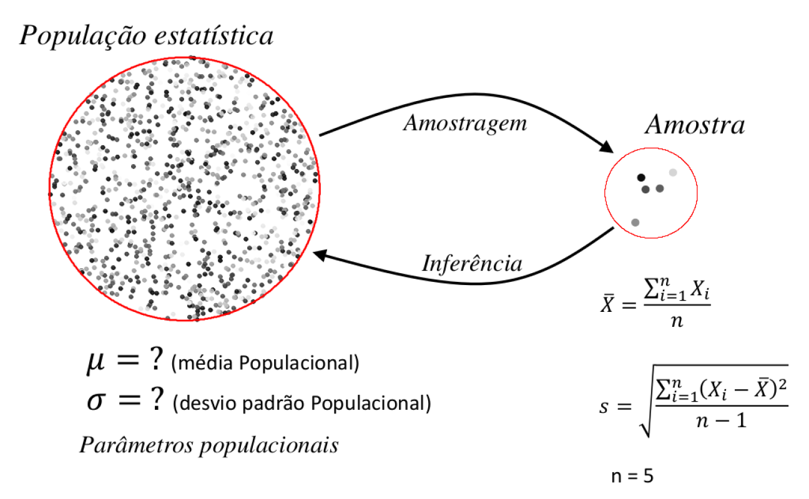

Capítulo 10 Introdução ao Teste de Hipóteses
Um dos objetivos centrais em estatística é fazer inferências válidas para a população examinando as características de uma amostra. Geralmente, a teoria disponível para um determinado campo do conhecimento científico nos permite fazer afirmações sobre determinado fenômeno, tais como:
“a fragmentação de habitats reduz a diversidade em \(x\) espécies”;
“em níveis elevados de poluentes, a taxa de sobrevivência de um determinado organismo cai em \(y\%\)”;
“a remoção da área de mangue implica na redução em \(m\%\) da captura de carbono”.
Todas estas afirmações são hipóteses, sobre um ou mais parâmetros de uma população estatística. A experimentação nos permite, com base na amostra, tirar conclusões sobre determitada hipótese. Mais especificamente, queremos saber se os dados em mãos nos permitem ou não refutar uma hipótese inicial.
Vamos a um exemplo simples. Se desejamos fazer uma inferência sobre um parâmetro da população estatística (ex.: sua média \(\mu\)), devemos iniciar com uma afirmação sobre a posição deste parâmetro, que denominamos de hipótese nula (\(H_0\)).
Ex. Um modelo de climático sugere que a pluviosidade média entre junho e agosto nas cidades litorâneas do estado de São Paulo seja de \(110\) mm/mês.
Um cientista acredita que o modelo têm falhas e resolve tomar algumas observações sobre chuva mensal a fim de testar esta afirmação. Este cientista iria iniciar por formalizar suas hipóteses estatísticas.
Inicialmente será necessário estabelecer a hipótese nula, que neste exemplo será:
\(H_0: \mu = 110\) mm de chuva
Se uma análise estatística concluir que a hipótese nula é falsa, então deveremos ter uma hipótese alternativa (\(H_a\)). Assim, no caso de rejeição de \(H_0\) passaremos a assumir \(H_a\) como verdadeira.
A hipótese alternativa neste exemplo será:
\(H_a: \mu \ne 110\) mm de chuva
Note que as hipóteses nula e alternativa se referem a predições sobre a posição da média populaçional \(\mu\). Como não temos acesso à \(\mu\), nossa opção é tomar amostras do fenômeno, medindo a quantidade de chuva em diferentes localidades e calcular a média amostral \(\overline{X}\).
10.1 Probabilidade e teste de hipóteses
A média \(\overline{X}\) de uma amostra será nossa melhor evidência a respeito de \(\mu\). Tendo este valor, podemos nos perguntar:
O valor obtido de \(\overline{X}\) é condizente com o esperado segundo \(H_0\)?
Podemos racionalizar que se \(\overline{X}\) estiver muito próximo a \(\mu\), não haveria evidências para rejeitar \(H_0\). Por outro lado, um valor de \(\overline{X}\) muito distante de \(\mu\) irá colocar em dúvida a afirmação feita em \(H_0\). O ponto relevante aqui é: quão distante de \(\mu\) deve estar \(\overline{X}\) para que rejeitemos \(H_0\)?
Esta resposta poderá ser respondida somente com o auxílio de um modelo probabilístico aplicado ao experimento em questão. Seja \(H_0\) verdadeira, é esperado que a probabilidade de \(\overline{X}\) estar próximo a \(\mu\) é alta. Portanto, uma pergunta melhor formulada seria:
Sendo \(H_0\) verdadeira, qual é a probabilidade de que uma determinada média amostral \(\overline{X}\) esteja tão ou mais distante de \(\mu\) quanto o observado em nossa amostra particular?
Uma vez que estamos falando da distribuição de médias amostrais, vale retomar o que determina o Teorema Central do Limite (TCL). Segundo o TLC, a distribuição das médias amostrais tenderá a uma distribuição normal com média \(\mu\) e desvio padrão \(\sigma_{\mu} = \frac{\sigma}{\sqrt{n}}\).
Desta forma, para um \(H_0\) verdadeiro, seria esperado que a distribuição das médias amostrais resultantes de um procedimento experimental tivesse o formato de um distribuição normal, centrada em \(110\) mm.
Digamos ainda que o modelo climático estabeleça que o desvio padrão para a quantidade de chuva seja \(\sigma = 30\). Neste caso, o desvio padrão esperado para as médias amostrais seria de \(\sigma_{\mu} = \frac{30}{\sqrt{n}}\). Por se tratar do desvio padrão da médias amostrais, \(\sigma_{\mu}\) é denominado de erro padrão da média (Capítulo 6).
Feito isto, temos em mãos o modelo probabilístico que, aliado a uma amostra particular, nos permitirá concluir se há evidências para rejeitar \(H_0\) em favor de \(H_a\).
Segundo a distribuição normal, a probabilidade do valor observado \(\overline{X}\) estar tão ou mais distante de \(\mu\) na distribuição \(Z\) é calculando por:
\[z = \frac{\overline{X} - \mu}{\sigma_{\overline{X}}}\]
O valor de \(z\) calculato é chamado de estatśitica do teste. Com o uso da Tabela \(Z\), esta estatística será utilizada para encontrar:
\[P(Z \ge z) = P(\overline{X} \ge \mu)\]
Como nossa pergunta se refere à distância entre \(\overline{X}\) e \(\mu\), devemos encontar também \(P(Z \le -z)\), de modo que a probabilidade que nos interessa será representada pela área destacada na figura abaixo que nos dá \(P(Z \ge |z|)\).

Valores de \(\overline{X}\) muito próximos a \(\mu\) resultarão em valores de \(z\) próximos a zero. Neste caso, a probabilidade de \(\overline{X}\) estar tão ou mais distante de \(\mu\) é alta. Se \(\overline{X}\) estiver muito distante de \(\mu\) o valor calculado \(z\) será grande e, consequentemente, estará associado a uma probabilidade muito baixa:

Iremos aceitar ou rejeitar \(H_0\) na medida que esta probabilidade estiver acima (aceita \(H_0\)) ou abaixo (rejeita \(H_0\)) de um limite pré-estabelecido que denominamos de nível de significância - \(\alpha\).
10.2 Exemplificando um teste de hipóteses: o teste z
Digamos que o número de batimentos cardíacos por minuto de um adulto em repouso tenha média \(\mu = 65\) e desvio padrão \(\sigma = 9\). Você imagina que o sedentarismo altera o batimento médio de um adulto. Para testar esta suposição você deve inicialmente determinar as hipóteses nula e alternativa:
\(H_0: \mu = 65\) batimentos por minuto
\(H_a: \mu \ne 65\) batimentos por minuto
Em seguida você determina o nível de significância (\(\alpha\)) do teste. Vamos determinar que queremos fazer o teste ao nível de significância \(\alpha = 0,05\).
IMPORTANTE: O nível de significância \(\alpha\) deve ser determinado antes da tomada de dados.
Finalmente, você seleciona ao acaso \(n = 15\) pessoas de hábito sedentário e mede seus batimentos cardíacos.
Os resultados obtidos desta amotra aleatória são:
Amostra: 65, 73, 56, 71, 69, 69, 68, 59, 73, 68, 69, 64, 67, 64, 66
que nos dá uma média amostral de:
\(\overline{X} = \frac{\sum{X_i}}{n} = \frac{65+73+56+71+69+69+68+59+73+68+69+64+67+64+66}{15} = 66.73\) batimentos por minuto;
e um erro padrão de:
\(\sigma_{\mu} = \frac{\sigma}{\sqrt{n}} = \frac{9}{3.87} = 2.32\)
Com estes resultados encontramos o valor correspondente de Z.
\(z = \frac{\overline{X} - \mu}{\sigma_{\mu}} = \frac{66.73 - 65}{2.32} = 0.75\)
Utilizando a Tabela Z, encontramos a probabilidade de obtermos valores tão ou mais extremos que \(-0.75\) e \(+0.75\).

Com isto, a probabilidade de encontarmos valores tão ou mais extermos que \(\overline{X} = 66.73\) foi calculada em \(0.227 + 0.227 =\) 0.453.
Neste exemplo, a estatística do teste foi \(z = 0.75\) o a probabilidade associada \(p = 0.453\).
No R fazemos:
X <- c(65, 73, 56, 71, 69, 69, 68, 59, 73, 68, 69, 64, 67, 64, 66)
Xm <- mean(X)
pnorm(q = Xm, mean = 65, sd = 9/sqrt(15), lower.tail = FALSE) * 2## [1] 0.455723110.2.1 Tomada de decisão sobre \(H_0\): nível de significância
No exemplo acima, obtivemos \(p =\) 0.453. Isto significa que:
sendo \(H_0\) verdadeira, existe uma probabilidade igual a \(0.453\) de que a média de uma amostra com \(n = 15\) esteja tão ou mais distante de \(\mu = 65\) como observado neste experimento.
Se aceitarmos que esta probabilidade é alta, então não há motivo para buscar por outras explicações. Por outro lado, se concluirmo que esta probabilidade é baixa, estamos dizendo que resultado obtido é improvável segundo a hipótese nula. Neste caso, temos espaço para buscar por hipóteses alternativas que possam explicar o fenômeno.
Para decidir se a probabilidade obtida é alta ou baixa, devemos compará-la ao nível de significância \(\alpha\) pré-estabelecido. \(H_0\) será aceita somente se a probabilidade encontrada for maior que \(\alpha\). Por outro lado, se nossa probabilidade for menor ou igual a \(\alpha\), considerarmos os resultados improváveis segundo a hipótese nula e rejeitamos \(H_0\) em favor de \(H_a\).
Um nível crítico comumente utilizado é \(\alpha = 0.05\). No exemplo acima a probabilidade foi de 0.453, um valor muito acima de \(0.05\). Dizemos portanto, que a média amostral \(\overline{X}\) não está tão distante do \(\mu\) a ponto de rejeitarmos \(H_0\).
Concluimos que, neste exemplo, \(\overline{X} = 66.73\) não nos fornece evidência suficiente para rejeitar \(H_0\).
10.3 Erros de decisão em um teste de hipóteses
A interpretação da probabilidade final esta associada à situação em que \(H_0\) seja verdadeira.
Isto nos leva perguntar: o que esperar caso \(H_0\) seja falsa?
Como não sabemos de fato, de \(H_0\) é verdadeira ou não, a tomada de decisão sobre um resultado de um teste estatístico pode nos levar às seguintes situações:
| \(H_0\) Verdadeira | \(H_0\) Falsa | |
|---|---|---|
| \(H_0\) é rejeitada | \(\alpha\) (\(\textbf{Erro Tipo I}\)) | Decisão correta (\(1-\beta\)) |
| \(H_0\) é aceita | Decisão correta (\(1-\alpha\)) | \(\beta\) (\(\textbf{Erro Tipo II}\)) |
A tabela acima nos mostra os tipos de erros aos quais estamos sujeitos ao realizar um teste de hipótese.
Eventualmente, podemos rejeitar \(H_0\), ainda que ela seja verdadeira. O nivel de significância adotado, estabele que a probabilidade disto acontecer é \(\alpha\). Se rejeitarmos \(H_0\) quando ela é verdadeira, estaremos incorrendo em um erro de decisão que denominamos de Erro Tipo I. Consequentemente, temos uma probabilidade de \(1 - \alpha\) de aceitar corretamente \(H_0\) quando ela é verdadeira. Estabelecer um \(\alpha = 0,05\) nos garante que iremos incorrer no erro do tipo I em somente \(5\%\) das vezes que o experimento for realizado.
Um outra situação ocorre quando aceitamos erroneamente a hipótese nula que é falsa, incorrendo no Erro Tipo II. O erro do tipo II tem probabilidade \(\beta\) de acontecer. O complementar desta probabilidade (\(1-\beta\)) é denominado de Poder do Teste. Um teste poderoso é portanto, aquele que tem elevada probabilidade de rejeitar \(H_0\) quando ela é falsa.
As figuras abaixo representam as distribuições das médias amostrais e os erros do tipos I e II quando o \(H_0\) é verdadeira (\(\mu_a = \mu\)) e quando \(H_0\) é falsa (\(\mu_a > \mu\)).

Idealmente em um teste estatístico, seria interessante reduzir ao máximo os erros do tipo I e II. Ao reduzirmos o erro do tipo I, diminuindo \(\alpha\) teremos um teste mais rigoroso que raramente iria errar ao rejeitar um \(H_0\) verdadeiro (Figura A). Entretanto, este teste também raramente iria rejeitar \(H_0\) ainda que ele seja falso (Figura B). Consequentemente, ao diminuir o valor de \(\alpha\) ficamos menos propensos a cometer o erro do tipo I, porém mais propensos a incorrer no erro tipo II, isto é, não rejeitar uma \(H_0\) falsa.
Dadas estas características, o único modo que reduzir os dois tipos de erros simultaneamente é aumentando o tamanho amostral \(n\) pois, neste caso, reduzimos o erro padrão (\(\sigma_{\overline{X}}\)) e consequentemente a sobreposição entre as duas curvas acima.
10.4 Exemplo de um teste de hipótese: teste t para uma média populacional
O teste \(z\) que utilizamos anteriormente assume que a distribuição das médias amostrais é normalmente distribuída e que a variância populacional \(\sigma\) seja conhecida. Não temos entretanto, conhecimento sobre o valor de \(\sigma\), podendo somente estimá-lo pelo desvio padrão amostral \(s\). Adicionalmente, assumir que a distribuição das médias seja normalmente distribuída, como prevê o Teorema do Limite Central requer que tenhamos amostras grandes (os livros sugerem \(n \ge 30\)).
Ao falar de estimação intervalar (Capítulo 9) apresentamos outra distribuição de probabilidade, a distribuição t de Student. Dissemos que esta distribuição descreve melhor o comportamento das médias amostrais quando as amostras são pequenas e a variância amostral é desconhecida.
Seguindo este raciocínio, apresentamos o teste t para comparar uma média populacional. Este teste é muito similar ao teset \(z\) apresentado anteriormente.
Considere um exemplo simples. Dados do Banco Central do Brasil dizem que moedas de \(R\$ 0,10\) da segunda geração pesam 4.8 gramas. Você tem \(8\) moedas no bolso e resolve testar essa afirmação pesando cada moeda. Os pesos obtidos são: \(X = 5.1, 5, 4.8, 5, 5, 4.9, 4.9, 4.7\).
Inicialmente, devemos estabelecer nossa hipótese nula (\(H_0\)), nossa hipótese alternativa (\(H_a\)) e o nível se significância \(\alpha\). Iremos estabelecer \(\alpha = 0,05\) e as hipóteses como:
\(H_0: \mu = 4.8\) gramas
\(H_a: \mu \ne 4.8\) gramas
Como não conhecemos \(\sigma\) e temos uma amostra pequena, a posição das médias amostrais seguirá uma distribuição \(t\) de Student e a estatística do teste será:
\[t = \frac{\overline{X} - \mu}{s_{\overline{X}}}\]
sendo o erro padrão amostral obtido por:
\[s_{\overline{X}} = \frac{s}{\sqrt{n}}\]
O cálculo de \(t\) é muito similar ao escore z. No entanto, substituímos \(\sigma\) por \(s\). Como visto no capítulo 9, as distribuições de \(t\) e de \(Z\) são muto similares. Entretanto, para amostras pequenas e quando \(\sigma\) é desconhecido, a curva de \(t\) nos fornece uma melhor estimativa das probabilidades associadas a distribuição das médias amostrais.
Para este exemplo, temos uma amostra de tamanho \(n = 8\) com média \(\overline{X} = 4.925\)g e desvio padrão \(s = 0.13\)g. O valor de \(t\) pode ser calculado por:
\[t_{c} = \frac{\overline{X} - \mu}{s_{\overline{X}}} = \frac{\overline{X} - \mu}{\frac{s}{\sqrt{n}}} = \frac{4.925 - 4.8}{\frac{0.13}{\sqrt{8}}} = 2.76\]
Assim como fizemos para a distribuição \(Z\), devemos encontrar a probabilidade de obtermos um valor tão ou maior que o módulo de \(t_c\). Na figura abaixo, nosso resultado fica:

A probabilidade de encontrarmos um valor de \(t_c\) tão ou mais extremo segundo a hipótese nula foi de \(p = 0.028\). Uma vez que este valor é menor que o nível crítico \(\alpha = 0,05\), concluímos que existe evidência suficiente para rejeitar \(H_0\) e aceitar a hipótese alternativa de que as moedas de \(10\) centavos não provém de uma população estatística com \(\mu = 4,8\) gramas. Nossa conclusão é portanto, que as moedas de \(R\$ 0,10\) são mais pesadas que \(4,8\) gramas.
No R, o teste t discutido acima pode ser realizado por:
t.test(X, mu = 4.8)##
## One Sample t-test
##
## data: X
## t = 2.7584, df = 7, p-value = 0.02816
## alternative hypothesis: true mean is not equal to 4.8
## 95 percent confidence interval:
## 4.817844 5.032156
## sample estimates:
## mean of x
## 4.925Nos comandos acima, \(X\) é a amostra e o argumento ‘mu’ é o valor da média populacional segundo \(H_0\). Como resultados temos a indicação de que fizemos um teste \(t\) para uma amostra (One Sample t-test), o valor de \(t\) calculado (\(t = 2.76\)), os graus de liberdade (\(df = 8 - 1 = 7\)) e o valor de \(p = 0.028\). Nestes resultados, podemos ver ainda o valor da média amostral (\(\overline{X} = 4.925\)) e o intervalo de confiança a \(95\%\) (\(4.82 - 5.03\))
10.5 Graus de liberdade
A distribuição \(t\) como várias outras distribuições amostrais utilizadas em inferência estatística, muda seu formato em função do que chamamos de graus de liberdade (\(gl\)). Os graus de liberdade têm relação com o tamanho amostral. No caso do teste \(t\) para \(1\) amostra, esta relação é simplesmente: \(gl = n-1\).
À medida que os graus de liberdade aumentam, o formato da distribuição \(t\) se assemelha ao formato da distribuição Normal padronizada. De fato, para graus de liberdades altos (ex. \(n \ge 30\)), os formatos das distribuições \(Z\) e \(t\) são praticamente indistinguíveis. Na prática, isto faz que as distribuição \(Z\) raramente seja utilizada.

10.6 Probabilidades no teste \(t\) de Student: a tabela \(t\)
A rejeição/aceitação da hipótese nula em um teste t pode ser feita por meio da obtenção do valor de p ou pela comparação do \(t\) calculado com valores críticos de referência para determinado nível de significância. O primeiro caso foi o que apresentamos acima e depende de um software estatístico para obtermos valores exatos de \(p\). O segundo caso, pode ser feito com auxílio da Tabela t, em críticos de \(t\) são disponibilizados para diferentes níveis de significância e graus de liberdade.
O uso ta tabela \(t\) têm finalidade, em grande parte didática, uma vez que a aplicação do teste fora da sala de aula será invariavelmente conduzido por meio de um software estatístico. po este motivo vamos apresentá-lo aqui rapidamente.
Na tabela t que disponibilizamos, a primeira coluna mostra os graus de liberdade de \(1\) a \(120\). O cabeçalho da tabela de \(90\%\) a \(0,1\%\) mostra a área na distribuição de \(t\) nas caldas inferior e superior.
Vamos retornar ao exemplo da moedas de \(R\$0,10\) para exemplificar sua utilização. Neste exemplo a tinhamos \(8\) (\(gl = 7\) graus de liberdade) e o teste foi feito com \(\alpha =0,05\). Se buscarmos na linha \(gl = 7\) e a coluna \(5\%\) (\(\alpha = 0,05\)), encontraremos o valor \(t = 2,3646\). Este é o chamado \(t\) crítico. Acima deste valor e abaixo de sua contraparte negativa temos exatamente \(5\%\) da área na disribuição \(t\). Deste modo qualquer valor calulado maior que \(t\) crítico estará mais para a extremidade da distribuição e consequentemente estará associado a menores valores de probabilidade. Neste sentido:
- \(t_{calculado} \ge t\) crítico leva a rejeição de \(H_0\)
- \(t_{calculado} < t\) crítico leva a aceitação de \(H_0\)
O resultado do teste estatístico em nosso exemplo foi \(t_c = 2.76\) que é maior que \(2,3646\). Isto nos leva à mesma decisão anterior (rejeitar \(H_0\)), ainda que por meio da tabela \(t\) não tenhamos o valor exato de probabilidade.